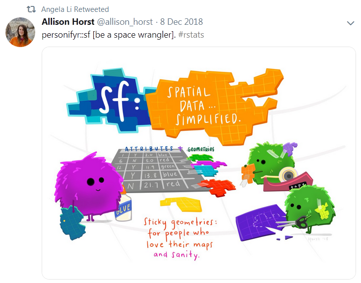

<div id="the-growth-of-r-user-groups-worldwide" class="section level2" align="center">
<h2>The growth of R user groups worldwide</h2>
<p></p>
</div>
<p><br></p>
<p><strong>Online Communities</strong></p>
<p></p>
<ul>
<li><code>#rstats</code> on <a href="https://twitter.com/search?q=%23rstats&amp;src=typd&amp;lang=en">Twitter</a></li>
<li><a href="https://community.rstudio.com/">RStudio’s question forum</a></li>
<li><a href="https://rweekly.org/">R Weekly</a> shares weekly highlights from across the R world</li>
<li><a href="https://rladies.org/">R Ladies meetups</a>
<ul>
<li>R Ladies Global <a href="https://twitter.com/rladiesglobal?lang=en">Twitter</a></li>
</ul></li>
<li><a href="https://www.rfordatasci.com/">R for data science learning community</a><br />
</li>
<li><a href="https://ropensci.org/">ROpenSci</a>
<ul>
<li><a href="https://ropensci.org/packages/">Packages &amp; Data</a></li>
</ul></li>
<li>MN Govt. Teams
<ul>
<li><a href="https://teams.microsoft.com/l/channel/19%3aj8WkD4Kx77zVY1Hm7_IH0pDWyVXgVSh3_FS0UQ63Xl41%40thread.tacv2/General?groupId=6cd8293a-b134-455b-abce-b55adade3e64&amp;tenantId=eb14b046-24c4-4519-8f26-b89c2159828c">MDH</a></li>
<li><a href="https://teams.microsoft.com/l/team/19%3a92cfbaafbda9430aa1a480d7994829cd%40thread.skype/conversations?groupId=44cb2676-6137-4f1c-b7d0-9fbd672f9c65&amp;tenantId=eb14b046-24c4-4519-8f26-b89c2159828c">MPCA</a></li>
</ul></li>
</ul>
<div style="margin-top: 4px; clear:both;">

</div>
<div style="float: left; width: 43%; max-width: 43%; margin-top: 12px; overflow:hidden;">
<p></p>
</div>
<div style="margin-top: 38px; float: left; width: 50%; margin-left: 5%;">
<p><strong>Conferences</strong></p>
<ul>
<li><a href="https://twitter.com/rstatsai">R Conference for Govt. &amp; Public Sector</a>
<ul>
<li>2022: Nov. 30th <a href="https://rstats.ai/gov/">DC and virtual</a></li>
</ul></li>
<li>useR Conferences in July
<ul>
<li>2022 <a href="https://user2022.r-project.org/">virtual</a></li>
<li>2021 <a href="https://user2021.r-project.org/recordings/">online recordings</a></li>
<li>2019 in <a href="http://www.user2019.fr/">Toulouse, France</a></li>
<li>2018 in <a href="https://user2018.r-project.org/">Brisbane, Australia</a></li>
</ul></li>
<li><a href="https://www.rstudio.com/conference/">RStudio Conferences &amp; workshops</a>
<ul>
<li>2022: Washington DC, July 25-28</li>
</ul></li>
</ul>
</div>
<div style="margin-top: 5px; clear:both;">

</div>
<p><br></p>
<div id="section" class="section level2">
<h2></h2>
</div>
